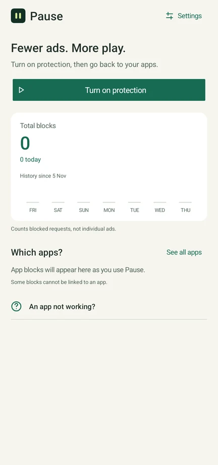
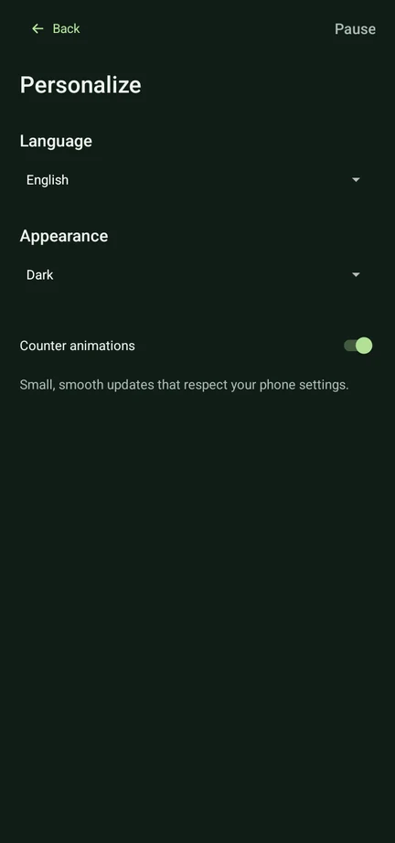
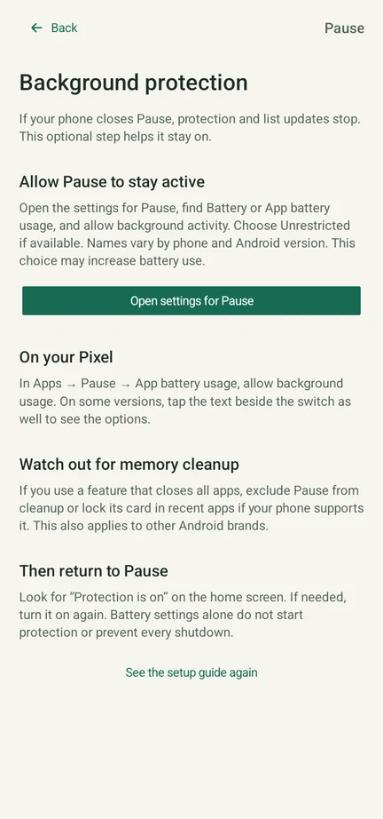

Fewer ads.
More play.
Your phone is for the things you enjoy.
Pause helps keep the ads out of the way.
A simple ad blocker for Android games, apps and browsing. Turn it on. Get back to your day.
Free, always yours. Android 8+ · 0.4.2

Then back to it.
Made for my own phone.
Shared for yours.
Free & open source
Your data stays yours
English · Italiano · Español
Less to set up.
More to enjoy.
Open Pause, turn on protection, and return to your apps. The extra controls are there when you need them.
One place to start.
Turn protection on or off. See what Pause has blocked, right on the home screen.

Make it feel like you.
Light or dark. Three languages. Simple choices, without changing your phone.

A little help, built in.
Easy setup and battery guidance for Samsung, Xiaomi, Pixel and other Android phones.
See setup, settings and privacy screens


Screenshots captured from the app on an Android emulator. Counts are blocked network requests, not individual ads removed.
Protection that keeps up.
Ad-blocking lists update automatically while protection is on. No daily downloads to manage.
You're in control.
Need an app or a reward video to work? Pause protection or leave that app out.
Your phone.
Your trust.
An app that asks for access should tell you exactly why. Here's what you're giving Pause — and what you're keeping.
Read the security notesThe filtering happens on your phone.
Android calls it a VPN connection. Pause uses it to check ad-related requests locally. Your games and browsing aren't sent through a Pause VPN server.
No account. No tracking by Pause.
No analytics, ad SDKs or account to create. Your rules and statistics stay on your device. Pause doesn't read or decrypt your HTTPS content.
You can look under the hood.
The code is public. Official APKs are signed with the same release key, so Android can check that an update comes from the same publisher.
Where do allowed requests go?
Allowed domain lookups go to Cloudflare over unencrypted DNS. Cloudflare and your network may see those lookups. Blocking lists download from GitHub over HTTPS. Pause isn't an anonymity service.
What permissions does it need?
You approve the local VPN through Android. Notifications are optional. No root, Accessibility service, HTTPS certificate, contacts or location access. Android allows one VPN at a time.
Is open source a security guarantee?
No. It lets anyone inspect, build and improve the code. Pause has local automated tests and documented device checks, but hasn't had an independent security audit. It's shared without a warranty. Download from this repository and keep Android's security checks enabled.
Your next game
is three steps away.
No account. No long configuration.
Just your phone and a moment to get started.
Download & install.
Open the APK on your Android phone. If asked, allow installation from the browser or app you used to open it. Keep Android's security checks on.
Turn on protection.
Open Pause and accept Android's VPN prompt. Follow the optional background guide to help your phone keep Pause running.
Go back to your apps.
Fully close and reopen your game. Already downloaded ads may remain. You can pause protection at any time.
A few things
worth knowing.
Will it block every ad?
No ad blocker can promise that. Pause works well with many separate ad services, but some apps serve ads and content together. YouTube and Instagram's built-in ads may remain. Some games may show an empty ad window, wait for an ad, or withhold a reward.
Is it really free?
Yes. No account, subscription or paid tier. It started as something I wanted on my own phone. Now the code and app are shared with the community under the GPLv3 license.
Can I use it on iPhone?
This version is for Android 8 and later. An APK can't be installed on iPhone, and this website can't filter ads inside games.
What if an app stops working?
Tap Pause protection, or exclude that app in Settings. You can also allow a specific domain in Advanced. Your choice — no need to uninstall Pause.
Do I need to leave Pause open?
You can use other apps while protection runs. If Android closes Pause to save battery or clean memory, filtering and list updates stop until you turn protection back on. The background guide explains what to check.
How do updates work?
Ad-blocking lists refresh about every 24 hours while protection is on. If a download fails, the previous list stays in place. App updates are separate: download the new APK and install it over the old one to keep your settings.
Can I use another VPN?
Android supports one active VPN at a time. Another VPN replaces Pause. Don't enable Android's “Block connections without VPN” option: Pause filters domain lookups, while ordinary traffic uses your regular connection. An app's own encrypted DNS can bypass the filter.
Built out of
“enough with the ads.”
I wanted to enjoy a game without an ad taking over every few moments. So I built Pause for myself: one button, clear choices, and no account to get in the way.
It worked well for the games I tried. Sharing it felt like the obvious next step. Try it, read the code, tell me what breaks, or make it better for everyone.
Matteo, the developerGive your apps
a little Pause.
Free & open source · Android 8+
Signed APK · Version 0.4.2